C'est l'heure pour un chapitre très DIVERTISSANT !
Yugioh: The Power of Four
Judai: Nous y sommes ! C'est ici !
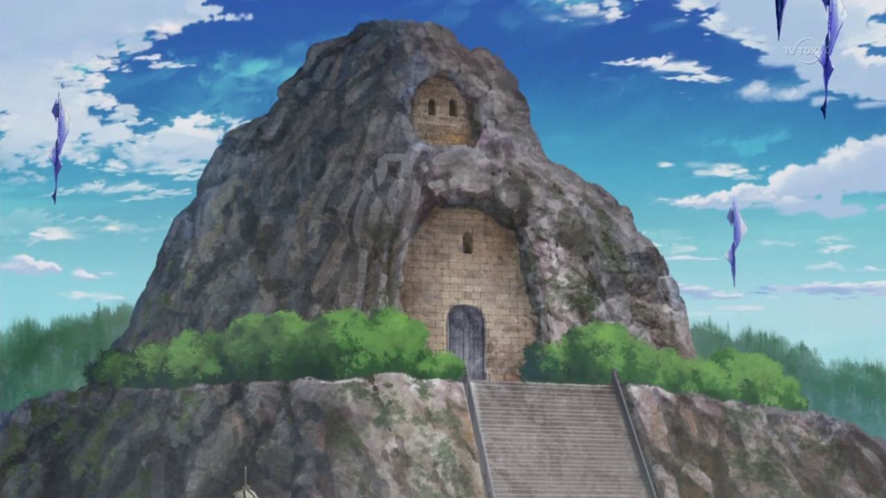
Judai a annoncé à
Serena et aux autres élèves qu'ils étaient
arrivés à destination. Après avoir atteint les quais du continent, Judai a fait descendre son groupe du bateau et l'a suivi à travers la ville et dans la nature sauvage
juste à l'extérieur de la ville. Il les a ensuite emmenés sur un sentier les menant à une montagne avec deux grandes portes en métal devant. C'est là qu'ils venaient de
s'arrêter.
Serena: Quel est cet endroit ?
Serena demanda avec étonnement.
Judai: Tu es sur le point de le découvrir. J'espère juste qu'elle nous attend à l'intérieur.
Judai disait, en ouvrant les portes menant à l'intérieur.
Alex: Qui ? Demanda Alex
En entrant, ils ont vu que l'intérieur ressemblait à une
vieille eglise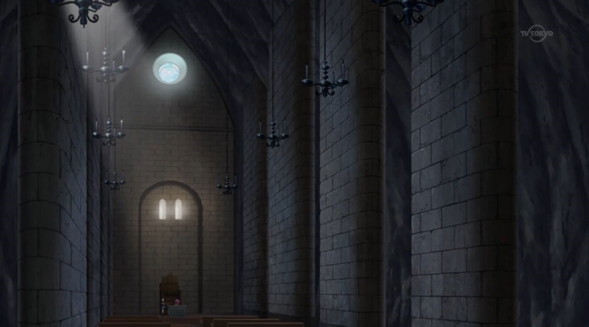.
A l'autre bout, quelqu'un se tenait debout, souriant de les voir.
???: Yuki Judai. Je commençais à me demander si tu avais vraiment réussi à t'échapper d'Academia.
La personne qui leur parla était une adolescente aux longs cheveux blonds et semblait avoir l'âge de Judai. Lorsqu'il l'a rejointe, Judai lui a serré la main et lui a
souri.
Judai: Je t'ai dit que j'avais un plan, Asuka. J'ai seulement dû affronter quelqu'un en duel pour faire sortir tout le monde. Mais bon, en fin de compte, ça a marché.
Répondit Judai.
Asuka hocha la tête, puis, remarqua le groupe.
Asuka: Et ce sont les étudiants que tu as libérés ? Demanda Asuka. Judai acquiesca et se tourna vers le groupe.
Judai: Les amis, voici Tenjoin Asuka. Elle s'est échappée d'Academia, comme vous tous.
Judai commença l'introduction, puis, fit signe à Asuka de prendre le relais.
Asuka: Quand je l'ai rencontré pour la première fois et qu'il nous a dit, à moi et à Sensei, ce qu'il avait prévu de faire, j'ai pensé qu'il avait perdu la tête.
Mais, il m'a dit de lui faire confiance, et donc quand il a infiltré Academia, on m'a dit d'attendre ici chaque nuit jusqu'à ce qu'il revienne avec ces étudiants
emprisonnés. Je suis vraiment heureuse qu'il ait réussi.
Asuka a expliqué en regardant ensuite vers Serena.
Asuka: Tu dois être Serena, n'est-ce pas ?
Serena hocha la tête, surprise qu'Asuka connaisse son nom.
Serena: En effet. Je suis presque sûre que nous ne nous sommes jamais rencontrées, bien que je pense t'avoir apperçu le jour de ton arrivée à Academia il y a des
années.
Serena répondit. Asuka acquiesca la tête.
Asuka: Je suis contente que tu te sois échappée aussi, Serena. Ca ne doit pas être facile, de déserter avec les autres...
C'est alors que Serena l'interrompit.
Serena: Qui a dit que j'avais déserté ? La seule raison pour laquelle je suis partie avec Judai, c'est pour tester ma force contre des duellistes puissants et ainsi,
prouver ma valeur !
Elle a fièrement déclaré. Serena s'attendait à ce qu'Asuka soit choquée et commence à se méfier d'elle, mais au lieu de cela, cette dernière ria doucement.
Asuka: Judai m'a prévenu que tu dirais quelque chose comme ça.
Asuka eu alors un air confus.
Asuka: Cependant, je suis surprise que tu ne sois pas contre Akaba Leo, même après que tu aie appris ce qu'il comptait te faire...
Serena: De quoi est ce que tu parles ?
Demanda Serena, surprise d'entendre cela. Asuka s'est ensuite tournée vers Judai, qui souri d'un air embarassé.
Judai: Je n'ai pas encore eu le temps de lui dire. Judai le disait, avec embarras.
Les autres élèves étaient maintenant curieux de savoir ce que Judai et Asuka voulaient dire à propos de Serena, surtout cette dernière elle-même.
Serena: Me dire quoi ? Quel grand secret me caches-tu encore cette fois-ci ?
Serena demanda. Judai soupira, et se tourna vers Asuka.
Judai: Asuka, tu peux emmener les autres à l'intérieur et les installer ? Dis-lui que je serai en bas avec Serena dans une minute.
Cette dernière acquiesca.
Asuka: Bien sûr. Tout le monde, à part Serena, suivez-moi s'il vous plaît. Je vais vous faire visiter et vous présenter à l'homme avec qui je travaille.
Elle a ensuite conduit Alex et ses compagnons de fugue à travers une porte secrète qui a révélé un escalier caché menant en bas. Après qu'ils aient commencé à descendre
les escaliers, la porte s'est refermée automatiquement. Judai et Serena étaient maintenant seuls.
Serena: Qu'est-ce qui se passe, Judai ? Que voulait dire Asuka quand elle a dit que le Professeur prévoyait de me faire quelque chose ?
Elle semblait de nouveau en colère d'avoir été tenue dans l'ignorance. Judai a alors regardé Serena avec une expression très sérieuse.
Judai: Serena, je suis désolé de ne pas avoir été honnête avec toi depuis notre rencontre. J'ai dû maintenir ma couverture à l'intérieur d'Academia. Mais à partir
de maintenant, je ne te dirai que la vérité.
Serena: Alors dis-moi ce que je ne sais pas !
Cria Serena. Judai prit une profonde inspiration et la relâcha avant de commencer.
Judai: La vérité est que libérer ces étudiants n'était pas ma vraie raison qui m'a poussé à m'introduire dans Academia... c'était toi.
Serena est restée là, stupéfaite par cette révélation.
Serena: Moi !? Qu'est-ce que tu veux dire !?
Judai: Voilà ce qui s'est passé. Akaba Leo n'allait JAMAIS te laisser rejoindre ses soldats concernant l'Arc Area Project. Peu importe à quel point tu voulais lui
prouver ta valeur. Il avait prévu de faire autre chose, quelque chose... qui allait finalement mettre fin à ta vie telle que tu la connais. Je devais te faire sortir de
là avant qu'il n'ait l'occasion de le faire.
Lui révéla Judai.
Serena était aussi immobile qu'une statue, extrèmement choquée par ce qu'elle venait d'entendre.
Serena: Le Professeur... prévoyait de... m'éliminer !?
Judai la vit alors lever les poings de colère, et son corps trembler.
Serena: Menteur... MENTEUR ! Je ne te crois pas ! Le Professeur ne ferait jamais... !
Judai: Pourquoi penses-tu qu'il ne te laisse jamais partir ? Pourquoi garde-t-il toujours un œil sur toi depuis que tu es arrivé là-bas ? Dis-moi pourquoi il ne
t'a pas laissé participer à l'invasion de la dimension Xyz.
Judai lui a demandé sévèrement. Serena a tressailli à son ton.
Serena: Comment sais-tu tout cela ? Comment diable en sais-tu autant sur moi alors que je ne sais rien du tout sur toi ?
Elle a répliqué. Elle s'était pleinement attendue à ce que Judai argumente davantage, mais une fois de plus, ce dernier l'a surprise.
Judai: Lorsque je n'étais pas beaucoup plus âgé que toi, je suis également allé dans une
ecole de duel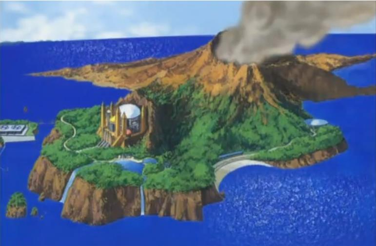
, sur une île en pleine mer. Mais cette Académie du Duel... était complètement différente de celle d'ici. Dans cette école, j'y ai passé les 3 meilleures années de
ma vie. Je me suis fait beaucoup d'amis, je me suis amusé et j'ai vécu des Duels et des aventures passionnantes. J'ai même sauvé le monde plusieurs fois pendant
que j'y étais. Il y a eu quelques fois où je m'étais perdue moi même dans l'ignorance, mais grâce à mes amis, j'ai été capable de voir plus clair, et ainsi, de toujours revenir sur la bonne voie.
Serena a écarquillé les yeux en voyant à quel point Judai était ouvert avec elle.
Serena: Est-il vraiment sérieux ? Se demanda-t-elle. Judai poursuivit.
PERSONNE n'a été formé là-bas pour être un soldat duelliste sans cœur. Personne n'était dur ou cruel comme cet imbécile de Sanders. De plus, l'homme
qui dirigeait cette école n'a vraiment RIEN à voir avec celui que tu admires. Il ne pourrait pas être plus différent de Leo. Honnêtement, Academia se porterait
beaucoup mieux si il était aux commandes. Puis, il n'y a pas si longtemps, j'ai appris ton existence par une source extérieure. Cette source m'a dit ce que
Akaba Leo préparait et m'a demandé de te sauver, et donc... me voilà.
Lorsque Judai a finalement terminé, il s'est tu afin que Serena puisse digérer toutes ces informations.
Elle avait du mal à croire ce qu'elle venait d'apprendre sur la vie de Judai. Cependant, une partie d'elle ne voulait pas croire ses mensonges sur le Professeur et ce
qu'il prévoyait vraiment pour elle. D'un autre côté, Judai ne semblait pas être une personne malhonnête. Elle ne pouvait toujours pas décider si elle devait le croire
sur parole, ou non. Malgré tout, ses questions ont fait remonter un vieux souvenir de son enfance. Si Judai était vraiment prêt à être si ouvert et honnête avec elle...
Serena: Il y a trois ans, j'ai essayé de m'échapper d'Academia avec un étrange garçon sorti de nulle part. Nous avons failli nous enfuir quand le Professeur nous a
surpris. Il m'a dit que mon avenir était à Academia, et nulle part ailleurs. J'ai exigé de savoir pourquoi il ne voulait pas me laisser partir malgré mes capacités.
Tout ce qu'il a dit, c'est que ce n'était pas le moment de les utiliser. Je lui ai répondu que c'était le bon moment, puisque l'invasion de la dimension Xyz était sur le
point de commencer. Après m'être faite appréhender par
l'Obelisk Force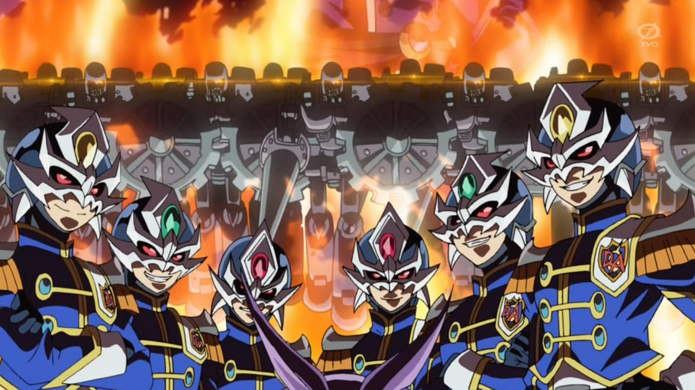
, il m'a dit qu'il me retrouverait qu'importe où que je m'enfuirais. L'Obelisk Force m'a alors traîné à l'intérieur contre ma volonté. Je n'ai jamais revu ce garçon
inconnu par la suite.
Son expression s'est adoucie au fur et à mesure qu'elle parlait.
Serena: Le Professeur ne m'a jamais dit une seule fois quelles étaient les raisons pour lesquelles il me gardait confinée au sein d'Academia. Il a toujours gardé le silence et n'a rien dit d'autre que je devais rester. Elle termina. Judai acquiesça.
Judai: Il t'a gardé tes années durant, parce qu'il avait besoin de toi pour autre chose que d'être un loyal et habile soldat. Il ne pouvait pas risquer de te perdre
jusqu'à ce que ce besoin se fasse sentir.
Après un moment, Serena a commencé à froncer son visage. À la grande surprise de Judai, il a vu des larmes se former dans ses yeux.
Serena: Comment a-il pu !? Après toutes ces années où je me suis entraînée, à lui montrer combien je suis devenue forte ? Je n'ai été que loyale et dévouée envers
lui et Academia ! Quel gâchis ! Comment a-t-il pu... me faire ça !?
Elle ne pouvait plus contenir ses sentiments et s'est mit à pleurer. Elle avait honte de son comportement, mais elle s'en fichait. De façon inattendue, Judai est venu
vers Serena et l'a serrée dans ses bras. Instinctivement, elle lui a rendu son étreinte et a pleuré sur son épaule. Aucun mot n'a été prononcé, alors que Judai a
permis à Serena de laisser libre cours à toutes ses émotions.
Chapitre 4: Une vérité des plus blessante. Un duel pour redonner le sourire.
Après avoir pleuré pendant un long moment, Serena et Judai sont finalement entrés dans le complexe souterrain derrière les escaliers. Elle a dit que tout ce qu'elle
voulait faire, c'était d'aller se coucher, alors Judai s'est exécuté. Lorsqu'ils ont rencontré Asuka, elle a accepté et a conduit Serena dans une chambre vide au fond
du bâtiment. La fille plus âgée lui a fourni un pyjama et de nouveaux vêtements pour le lendemain.
Asuka: Tu as beaucoup souffert, tu devrais dormir un peu. Tu pourras rencontrer mon professeur demain matin.
Serena la remercia, ainsi que Judai pour leur gentillesse avant de refermer la porte, la laissant enfin seule avec ses pensées. Après s'être changée, elle se laissa tomber sur son lit et, avec quelques difficultés, s'endormit enfin.
Tard, le lendemain matin, Serena s'est réveillée encore bouleversée et déprimée par la trahison du Professeur. En prenant une douche, elle a pris la décision de ne
jamais retourner à Académia, pas tant que le Professeur... Leo Akaba, était encore en charge.
Serena: Cet personne n'est plus le "Professeur" pour moi. Je ne peux pas être loyale envers quelqu'un qui veut seulement m'utiliser pour un plan malsain et qui finira par me tuer.
Bien qu'elle détestait y penser, elle devrait demander à Judai quels sont exactement les véritables plans de Akaba Leo pour elle.
Après sa douche, elle a mis les vêtements qu'Asuka lui avait laissés. Elle porte maintenant une simple veste rouge, une large jupe grise, un gilet noir à moitié
dézippé sur une chemise blanche et de grandes bottes noires et rouges. Et bien sûr, elle a enroulé ses cheveux en queue de cheval avec son ruban jaune.
Elle s'est regardée dans le miroir et a aimé ce qu'elle a vu. Dans son reflet, il n'y avait aucune trace d'Academia sur elle, nulle part.
Serena a été légèrement surprise quand elle a entendu quelqu'un frapper à sa porte.
Asuka: Serena ? C'est Asuka. Tu es déjà réveillée ?
Serena: La porte est ouverte. Serena a répondu, permettant à Asuka d'entrer. La jeune femme a souri en voyant la nouvelle tenue de Serena.
Asuka: Ce look te va bien. Commenta Asuka. Serena lui souria en retour.
Serena: Je suis d'accord. Merci. Alors, est-ce que j'ai manqué le petit-déjeuner ? Demanda la jeune fille, en sentant son estomac gargouiller. Asuka rigola un peu.
Asuka: En fait, nous étions sur le point de commencer. Suis-moi.
Elle a ensuite conduit Serena vers une grande zone où tous les fugitifs mangeaient, ainsi que Judai. Il venait à peine de s'asseoir quand il a repéré les filles.
Judai: Yo ! Serena ! Asuka ! Venez manger et rejoignez-nous ! Il a dit en leur faisant signe de sa main.
Une fois qu'elles ont eu leurs propres plateaux de nourriture chaude, Asuka et Serena ont rejoint Judai à la table où il se trouvait.
Judai: Content que tu aies pu venir, Serena ! Comment te, euh...sens-tu ? Le jeune homme demanda timidement, se rappelant à quel point elle était dévastée la nuit précédente.
Serena: Je vais... bien.
Elle a dit avant de commencer à manger. Judai et Asuka ont également mangé leur repas. Ils ont décidé de la laisser manger en silence, sachant qu'elle avait beaucoup
de choses en tête à ce moment-là. Il n'a pas fallu longtemps avant qu'ils ne nettoient tous leurs assiettes. Quand elle a eu fini, Serena a levé les yeux vers Judai.
Serena: Judai, j'ai encore des questions auxquelles je veux des réponses. Judai compris et hocha la tête.
Judai: Vas-y. Il a dit, l'invitant à poser ses questions.
Serena: Tout d'abord, comment as-tu réussi à infiltrer Academia pour commencer ? Tous les nouveaux étudiants sont généralement beaucoup plus jeunes. J'étais moi-même
petite quand je suis entré. Toi, cependant, tu est clairement plus âgé. Comment as-tu été accepté ?
Judai haussa les épaules.
Judai: Je me suis fait passer pour un élève transféré d'une autre école. Même si j'étais plus âgé que les autres enfants, j'étais techniquement un petit nouveau,
puisque ce serait ma première année là-bas. Mais, après la nuit dernière, je ne pense pas qu'ils vont autoriser d'autres étudiants transferés avant un bon moment.
Il le disait en riant, ce qui a fait sourire Asuka et Serena.
Serena: Certainement pas. Son sourire s'est vite effacé quand elle a posé sa prochaine question.
Serena: Qu'est-ce que le Profess... Akaba Leo, me veut vraiment ? Quels sont ses véritables plans ?
Judai semblait un peu mal à l'aise, même s'il s'attendait à ce que Serena pose cette question tôt ou tard. Pourtant, il devait lui dire quelque chose.
Judai: C'est une TRÈS longue histoire. Ce serait mieux si... tout le monde était réuni pour la narrer.
Serena: Que veux-tu dire par "tout le monde" ? Demanda Serena, maintenant plus curieuse. Asuka était aussi intéressée de savoir.
Judai: Tu n'es pas la seule dont la vie est en danger, Serena. Il y a 3 autres filles, une dans chacune des autres Dimensions, qui doivent aussi être protégées de
Akaba Leo. La bonne nouvelle est que chacune de ces filles a aussi quelqu'un pour les aider quand le moment sera venu, comme moi. Une fois que toutes les filles
seront sauvées, nous nous réunirons avec elles, ainsi que leurs protecteurs afin que tout le monde puisse entendre l'histoire en même temps.
Serena était vraiment stupéfaite d'apprendre que d'autres filles étaient ciblées par son ancien professeur. Pourquoi ces autres filles étaient-elles si spéciales ?
Pourquoi était-elle elle-même si spéciale ? Quel genre de lien pouvait-il y avoir entre elles qui les différenciaient de toutes les autres ?
Judai: Oh, et, je devrais probablement mentionner que chacune des filles sont également accompagnés par un garçon qui devront s'enfuirent ensemble. Ces garçons ont
aussi un lien avec elles, et donc ils devront eux aussi être au courant de l'histoire.
Judai ajouta.
Serena: Quels garçons ? Sont-ils aussi en danger ? Et qui est le garçon qui doit être avec moi ? Serena a demandé, en regardant tous les autres garçons étudiants autour de l'endroit.
Judai: En fait, tu es l'exception. Il n'y aura aucun garçon qui viendra avec toi... si tu ne me comptes pas, bien sûr.
Disait Judai avec un petit rire. Serena écarquilla les yeux de peur.
Serena: Est-ce que quelque chose est déjà arrivé à ce garçon qui est sensé être lié à moi ?
Serena a commencé à s'inquiéter que Leo ait déjà pu atteindre ce garçon. Judai a alors pris un air inhabituellement sinistre.
Judai: On peut dire ça. Disait-il doucement.
Judai: Ce garçon, celui avec qui tu partages une "certaine" connexion... est complètement loyal à Akaba Leo. Il n'y a aucune chance de le faire changer d'avis,
il est allé trop loin sur le chemin de la folie.
Serena a été choquée d'apprendre cela, ainsi qu'Asuka.
Asuka: Judai, qui est le garçon dont tu parles ?
Asuka a demandé. Judai hésita, rendant les deux filles plus nerveuses. Heureusement, il fut épargné de répondre lorsque les autres élèves crièrent tous:
Etudiants: Sensei !
Le trio se retourna pour voir un homme plus âgé entrer dans la zone.
Cet homme aux cheveux noirs ressemblait à un artiste de cirque. Il portait un costume rouge foncé et un chapeau haut de forme violet. Il avait également une canne,
qu'il utilisait pour se soutenir, vu qu'il boitait un peu. Il est clair qu'il s'est blessé à une jambe récemment et qu'elle n'est pas encore complètement guérie.
Serena: Est-ce là le "Sensei" dont tu as parlé avant, Asuka ? Demanda Serena, concernant l'homme qui se dirigeait vers eux. Asuka a hoché la tête avec un sourire.
Asuka: Oui. Son nom est Sakaki Yusho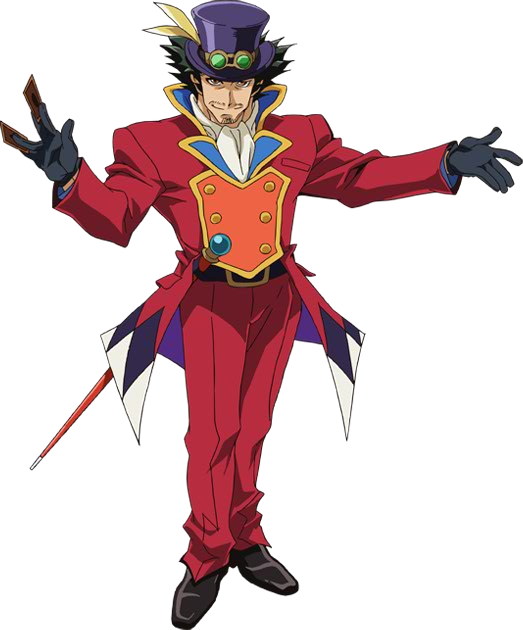. Il a aidé tout le monde ici, moi y compris.
Juste à ce moment, Yusho s'est assis à côté de Judai et en face d'Asuka et Serena. Il a souri et a salué Serena. Lorsqu'il l'a vue pour la première fois, il a dû se
rappeler que même si elles partageaient le même visage, elle n'était pas
la jeune fille
qu'il avait connue dans son ancienne maison. Judai lui avait mentionné avant sa mission d'infiltration.
Yusho: Tu dois être Serena. Bienvenue dans mon école de duel, la "You Show Duel School". Il a dit chaleureusement.
Serena: "You Show Duel School" ? C'est comme ça que s'appelle cet endroit. Yusho hocha la tête.
Yusho: Je l'ai fondée, avec l'aide d'Asuka, pour cacher et enseigner à tous les élèves qui ont eu la chance d'échapper à Academia. Ici, on leur apprend à s'amuser
dans leurs duels et à faire sourire tout le monde. En retour, ils apprennent à sourire pour eux-mêmes, sachant qu'ils apportent la joie et le bonheur aux autres.
Serena souria à nouveau.
Serena: Judai m'a dit qu'il était allé dans une école qui enseignait à ses élèves d'une manière similaire.
Yusho: Il l'a également mentionné lors de notre première rencontre. Yusho a ensuite regardé autour de lui les étudiants qui semblaient heureux.
Yusho: A part le groupe que Judai a amené ici, tous ces étudiants ont eu la malchance de participer à la première invasion de la Dimension Xyz.
Serena: Ils l'ont fait ? Serena a sursauté en regardant à nouveau autour d'elle.
Yusho: L'expérience les a traumatisés, et leur a fait voir à quel point les actions de leur école étaient vraiment mauvaises. Je peux les comprendre, vu que
j'y étais aussi là-bàs quand ça s'est passé.
Serena regarda Yusho, de plus en plus surprise.
Serena: Vous êtes de la dimension Xyz !? Yusho secoua la tête.
Yusho: Non, pas à l'origine. Je vis en fait dans la Dimension Standard, où se trouvent actuellement ma femme et mon fils.
Vous avez une famille là-bas ? Comment se fait-il que vous les ayez quittés ? Demanda Serena.
Yusho: Cela a commencé peu de temps après que j'ai développé la technologie Solid Vision avec mon vieil ami et partenaire... Akaba Leo.
La mâchoire de Serena s'est pratiquement décrochée à la suite de cette révélation.
Serena: Vous et lui... étiez amis !? Elle a demandé sous le choc.
Yusho: Comprends-moi bien. A l'époque, Leo n'était pas la même personne que celle que tu connais maintenant. En fait, nous nous entendions très bien et nous avons
développé les Actions Duel ensemble.
Disait Yusho, se souvenant du bon vieux temps.
Serena: Qu'est ce que les Actions Duels ? Serena n'avait jamais entendu parler d'un tel type de duel.
Yusho: Je t'expliquerai plus tard. Leo a disparu un jour, sans laisser de trace. Puis, il y a trois ans, j'ai été appelé par son fils,
Akaba Reiji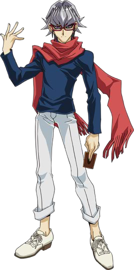, pour le rencontrer au sujet de son père.
Serena: Reiji ? Attendez, je me souviens que Akaba Leo avait aussi un fils. Je l'ai rencontré quand j'ai essayé de m'échapper d'Academia ! C'était aussi il y a trois ans !
Yusho: En effet. Leo a utilisé un téléporteur miniature pour renvoyer Reiji dans la dimension Standard et s'est assuré qu'il ne pourrait pas retourner à Academia.
C'est alors qu'il m'a dit ce qu'il avait découvert dans les recherches de son père sur les Quatre Dimensions et quels étaient ses objectifs. Il prévoyait de mettre
sur pied une équipe de Duellistes experte appelée Lancers pour lutter contre Leo et stopper ses ambitions. Reiji m'a également demandé de diriger ces Duellistes,
mais je voulais essayer de parler à mon vieil ami moi-même. J'ai utilisé le dispositif de voyage inter-dimensionnel développé par l'équipe de recherche de Reiji
pour me rendre là où il se trouvait, malgré leurs protestations. Cependant, au lieu d'être envoyé à Academia, je suis arrivé dans la Dimension Xyz. Sans aucun moyen
de partir, j'ai passé les trois années suivantes là-bas à enseigner aux jeunes duellistes ma philosophie sur le fait de faire sourire les gens par le biais des duels.
Serena était sur le point de lui demander comment il était arrivé dans la Dimension Fusion, quand elle eut une question plus importante pour lui.
Serena: Hier, Judai a dit à tous les étudiants qui écoutaient à Academia que tous les habitants de la Dimension Xyz, et pas seulement que les Duellistes,
mais aussi des innocents qui étaient attaqués et scellés dans des cartes. Il a dit que les forces d'invasion ont causé beaucoup de destruction et qu'elles ont
considéré l'Invasion comme un jeu de chasse, traitant les survivants en fuite comme des proies et y prenant un plaisir malsain. Est-ce que tout cela... est vrai ?
Demanda Serena. Elle se dit que Yusho devait lui donner la réponse s'il était vraiment allé dans la Dimension Xyz quand tout cela s'est produit. Yusho ferma les yeux et baissa son visage, paraissant triste.
Serena: Oui, Serena. Ce que tu as entendu est vrai. Pendant l'attaque, j'ai été forcé d'assister à ces atrocités sans pouvoir faire quoi que ce soit pour les
arrêter. C'était un cauchemar devenu réalité. Ce que faisait Academia me dégoûtait, et le fait que Leo, mon vieil ami, était responsable rendait ma douleur encore
plus grande. J'ai fait ce que j'ai pu pour aider les survivants avant de me retrouver ici.
Yusho le disait lourdement.
Serena vit que Yusho avait pensé chaque mot. Elle ressentait maintenant un véritable chagrin, pas seulement pour les étudiants qui regrettaient d'avoir participé à
l'invasion, mais pour tous ceux qui avaient souffert dans la Dimension Xyz à cause de cela. Cela renforçait encore plus sa décision de ne pas retourner à Académia.
Plus encore, elle voulait faire payer Akaba Leo pour tous les torts qu'il avait causés. Pas seulement pour elle, mais pour tous ceux qu'il a victimisés, ainsi qu'à ceux
qu'il visait personnellement. Il fallut un long moment avant qu'elle ne retrouve sa voix.
Serena: Alors, comment êtes-vous arrivé dans la Dimension Fusion ? Serena demanda. Yusho a de nouveau regardé en arrière en répondant.
Yusho: Pendant l'invasion, j'ai affronté le commandant en chef d'Académia, Edo Phoenix. Il a ensuite sorti une carte de sa poche qui est déchirée en deux.
Yusho: C'est aussi pendant ce duel que j'ai été blessé. Yusho le disait en frottant sa jambe douloureuse.
Yusho: Quand j'ai vaincu Edo, j'ai essayé de lui montrer que les enseignements de Leo étaient faux et que les duels ne devaient pas être utilisés pour blesser les
autres. Je pouvais voir qu'il était déchiré entre sa loyauté envers Academia et son désir de sourire. Je lui ai offert ma carte,
“Smile World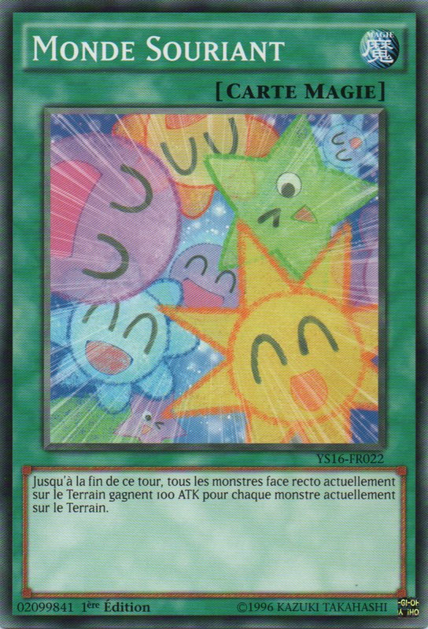 ”
, pour l'aider à se convaincre. Dans sa frustration, Edo en a arraché la moitié. C'est alors que j'ai été transporté d'une manière ou d'une autre dans la Dimension
Fusion, ma destination initiale. Je suppose qu'il a dû m'envoyer ici par accident.
Serena était stupéfaite que l'homme assis devant elle ait combattu et vaincu le commandant en chef de la force d'invasion d'Academia. Il doit être un duelliste très
fort pour accomplir cela ! C'est alors que Serena devait absolument voir ses compétences.
Serena: Sakaki Yusho. Je vous défie en duel ! Elle a déclaré avec audace, attirant l'attention de tout le monde. Yusho semblait surpris, mais il avait aussi l'air ravi en se levant.
Yusho: Un duel, hein ? Cela semble une idée amusante. J'accepte, jeune fille.
Il a dit en s'inclinant. Serena a souri, elle avait une chance de faire ses preuves contre un adversaire potentiellement fort. Judai et Asuka ont également souri en pensant que cela allait être très amusant à regarder.
Peu de temps après, Serena et Yusho se tenaient l'un devant l'autre, prêts pour leur match. Judai, Asuka, Alex, et tous les autres élèves se sont rassemblés pour
regarder leur Sensei en action.
Jeune garçon: Mec, ça va être génial ! Disait un garçon à côté d'Alex.
Jeune fille: Je ne peux pas attendre ! Les duels de Sensei sont toujours amusants à voir ! Disait une fille aux cheveux noirs. Ils attendaient tous impatiemment que les deux commencent.
Yusho: Est-tu prête pour le début du fun et de l'amusement qui va suivre ? Demanda Yusho. Serena a souri.
Serena: Montrez-moi ce que vous as dans le ventre ! Elle répondit alors que les deux duellistes activaient leurs disques de duel.
Serena: Je commence la première. C'est mon tour ! J'active une carte magie que j'ai en main,
“Yugo ”
.
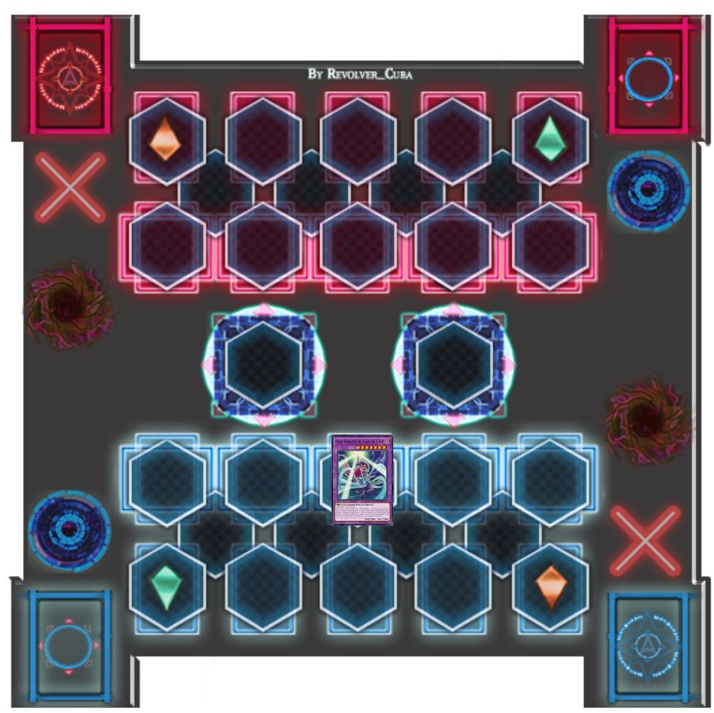
Une chatte humanoïde violet est maintenant apparu, portant des vêtements qui représentent un croissant de lune et maniant deux dagues.
Serena: Je pose 1 carte face cachée, et je termine mon tour. Allez, ne vous retenez pas, et ramenez-vous !
Disait Serena d'un ton provocateur. Yusho souria.
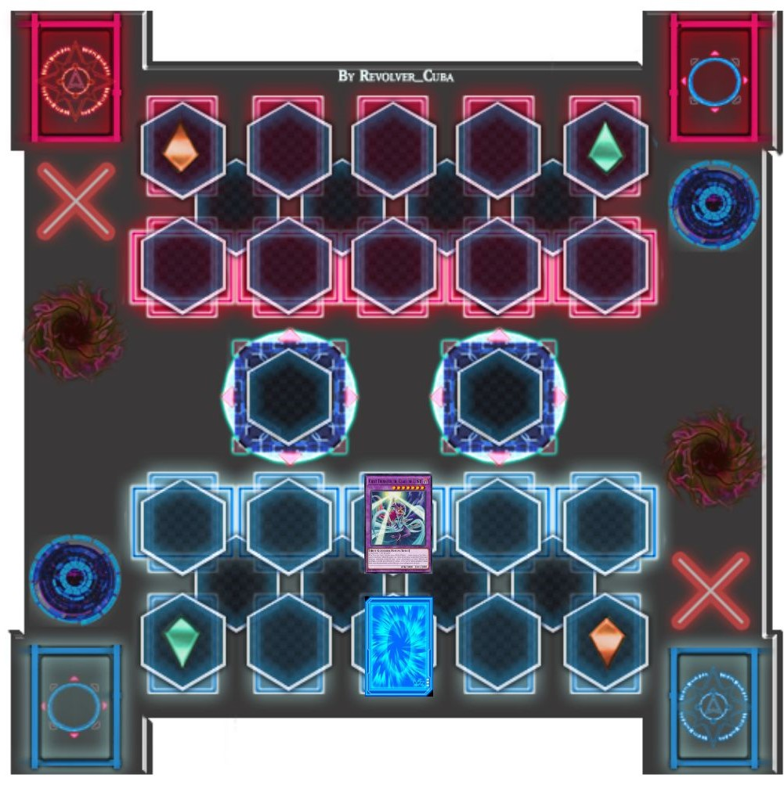
Yusho: Voyons si je peux la faire se détendre un peu. C'est mon tour. Draw !
Yusho: C'est ce que tu aurais attendu de la part de ton adversaire. Mais, comme tu vas le voir dans ce duel, tu ne peux pas toujours anticiper ce à quoi tu vas avoir affaire ! Voyons voir quelle en sera l'issue ! Serena grogna.
Serena: Je vous avais dis de ne pas vous retenir monsieur. Maintenant vous allez le regretez. C'est mon tour !
Après une grande bouffée de fumée, Serena a vu deux chapeaux sur le terrain. L'un était rouge tandis que l'autre était bleu, et les deux avaient des étoiles sur eux.
Serena: Qu'est-ce que c'est ? Yusho s'est ensuite mis à rire devant la réaction de Serena.
Yusho: Il est temps de s'amuser Serena ! Lorsque mon adversaire lance une attaque,
“Miracle Silk Hat ”
me permet de choisir un Monstre ainsi qu'une carte Magie ou Piège dans ma main et de les Invoquer Spécialement sur mon Terrain en tant que Monstres Normaux, sous
la forme de ces chapeaux ! Mais ce n'est pas tout ! Ce tour-ci, tu ne peux attaquer qu'avec un seul Monstre, et les deux cartes que j'ai choisies seront détruites à la fin de la
Battle Phase.
Serena a alors deviné où il voulait en venir.
Serena: Donc maintenant je ne peux attaquer qu'un seul de ces chapeaux, et je suppose que l'un d'eux me permettra vous infligez des dégâts.
Yusho: Correct ! Si le chapeau que tu attaques contient un Monstre, tous les dégâts de combat de ce tour seront doublés !
Mais s'il s'agit d'une Magie ou d'un Piège, aucun de nous ne subira de dégâts de combat ce tour-ci ! Alors, lequel des deux chapeaux sera la cible ? C'est à toi de choisir...
Disait Yusho en faisant un clin d'oeil.
Serena regarda d'un chapeau à l'autre, se demandant lequel elle devait attaquer. Elle n'avait aucune idée de quel chapeau était le Monstre que Yusho avait choisi.
Même Judai et Asuka ne savaient pas quoi faire. Si Serena avait deviné juste, les dégâts de son attaque seraient plus que suffisants pour vaincre Yusho et gagner le
duel. Pourtant, elle serait déçue de terminer le duel si tôt après avoir entendu comment son adversaire a réussi à vaincre Edo Phoenix. Quel que soit le résultat,
elle devait faire un choix...
Yusho: Je vais d'abord jouer
“Goyoku na Tsubo ”
, qui me permet de piochez 2 cartes supplémentaires.
Yusho a souri en voyant ce qu'il a obtenu, sachant que cela fera que Serena appréciera davantage le Duel.
Yusho: Viens ensuite mon artiste d'ouverture d'entrer en scène. Comme je n'ai aucun monstre sur mon terrain et que mon adversaire en possède un, je peux invoquer spécialement
“Entermate Revue Dancer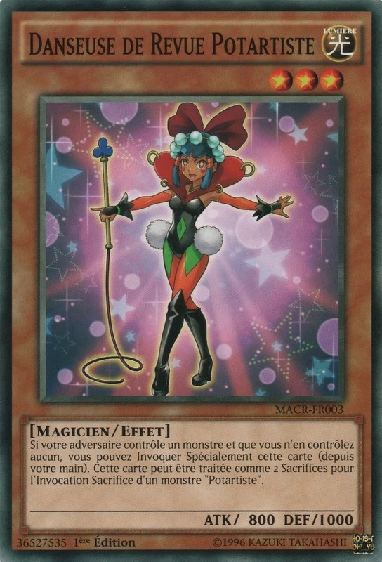 ”
depuis ma main.
Une jeune femme à la peau bronzée, habillée en orange et vert est apparue et maniait un fouet.
Serena: Elle n'a pas l'air si menaçante Murmura Serena. Yusho a alors agité son doigt.
Yusho: J'ai bien dit qu'elle était mon mon artiste d'ouverture. Quand je suis sur le point d'invoquer un monstre "Entermate" “Revue Dancer ”
peut être traitée comme 2 sacrifices. Le voici. Maintenant, la star principale du duel d'aujourd'hui va faire son entrée !
Le meilleur monstre de Yusho est apparu comme un mage blanc sans jambes avec d'énormes ailes et portant un ensemble d'anneaux interconnectés. Tout le monde a applaudi en le voyant, y compris Judai et Asuka.
Jeune fille: Le voilà ! Le meilleur monstre de Sensei ! Cria une jeune fille de joie.
Jeune garçon:
“Entermate Sky Magician ”
! Je suis en joie à chaque fois que je le vois ! Dit un jeune garçon.
Serena elle-même ne pouvait s'empêcher de sourire en voyant que Yusho devenait enfin sérieux.
Serena: Alors, c'est son meilleur monstre, c'est ça ? Je me demande s'il est aussi rusé que son maître... Pensa Serena.
Yusho: J'active une carte magie:
“Clairvoyance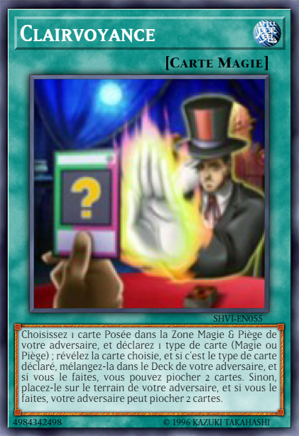 ”
! Maintenant, c'est à mon tour de faire un choix ! Cette fois, je choisis une de tes cartes face cachée sur le Terrain et j'essaie de deviner de quel type elle est.
Si j'ai raison, cette carte est mélangée dans ton Deck, et si c'est le cas, je peux piocher 2 cartes.
Si ce n'est pas le cas, cette carte est reposer sur le Terrain et tu pourras piocher 2 cartes. Je choisis la carte à ta gauche. Voyons voir maintenant...
Yusho a alors étudié la carte de Serena face cachée. Serena était légèrement méfiante. Il n'avait aucun moyen de savoir quelle était sa carte cachée. Yusho avait une
chance sur deux d'avoir raison, comme Serena l'avait fait avec ces chapeaux.
Yusho: Je crois que cette carte face cachée... est un piège !
Yusho a déclaré. Serena a souri triomphalement.
Serena: Mauvaise réponse.
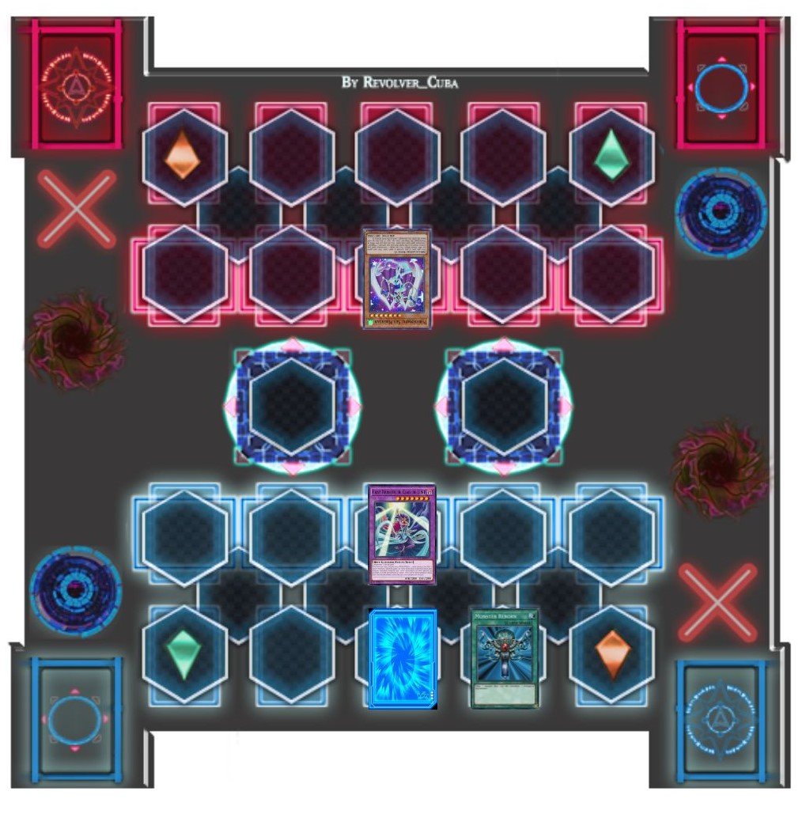
Serena annonça en révélant que sa carte était une carte magie appelée
“Shisha Sosei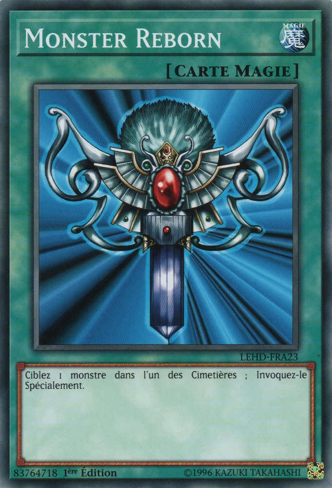 ”.
Yusho semblait déçu, mais c'était de courte durée. Il se contenta ensuite de glousser.
Yusho: Hohoho ! Parfois on réussit, parfois on échoue. Même moi, je peux me tromper de temps en temps !
Serena: Grâce à votre mauvaise réponse, je peux garder ma carte Magie et piocher 2 cartes de mon jeu ! Disait Serena en piochant ses cartes.
Yusho: Je joue une carte de magie continue appelé
“Majutsushi no Hidarite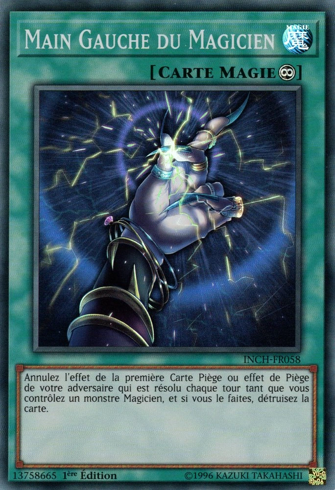 ”
. A ce moment, l'effet de
“Entermate Sky Magician ”
s'active. Quand je joue une carte Magie Continue, ses points d'ATK augmente de 300 !
(Entermate Sky Magician: 2500 + 300 = 2800 ATK)
Serena: Il a toujours quelque chose dans sa manche, n'est-ce pas ?
Sky Magician s'est envolé et a détruisit le monstre de fusion de Serena sous une lumière aveuglante.
(Serena : 4000 LP - 400 LP = 3600 LP)
Serena: J'active ma carte piège,
“Moonlight Reincarnation Dance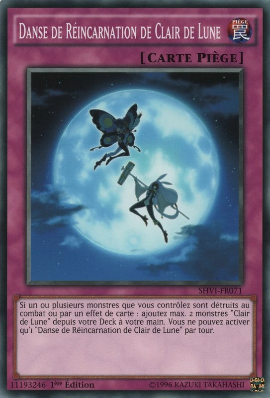 ”
. Lorsqu'un monstre Moonlight a été détruit, je peux ajouter 2 monstres Moonlight de mon deck à ma main.
Serena révéla son autre carte face cachée, mais cela ne lui servit à rien.
Yusho: Maintenant l'effet de
“Majutsushi no Hidarite ”
s'active. Une fois par tour, lorsque mon adversaire active une carte Piège alors que j'ai un monstre de type Magicien sur mon Terrain, je peux annuler ce Piège et le
détruire !
Yusho a contré, détruisant le piège de Serena.
Serena: Mince. Il savait d'une certaine manière que mon autre carte était un Piège, c'est pour ça qu'il a joué cette carte particulière.
Yusho: Je termine mon tour.
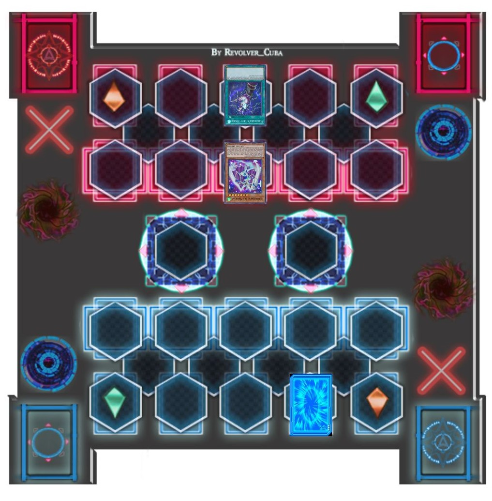
Yusho: Alors dis-moi Serena... est ce que tu t'amuses ? Il a demandé d'un ton enjoué. Serena lui a souri.
Serene: Qu'est ce qui vous fait pensez cela ? Elle lui a demandé en retour. Yusho en ria.
Yusho: Tu me rappelles tellement une jeune fille que j'ai connue chez moi. Et laisse-moi te dire... chaque fois que je voyais ce sourire sur son visage, je savais
qu'elle s'amusait. C'est pourquoi je sais... que tu t'amuses aussi, même si tu essaies de le cacher !
Il le disait en faisant un autre clin d'oeil.
Serena a été surprise que Yusho puisse lire en elle aussi bien. Mais cela n'avait pas vraiment d'importance. La vérité ,était qu'elle s'amusait vraiment dans ce duel.
Elle a commencé à se demander si c'était ce que Judai ressentait à chaque fois qu'il livrait un duel...
Serena: Voyons si vous vous amusez toujours après ça ! C'est mon tour !
Serena: J'active maintenant ma carte Magie face cachée,
“Shisha Sosei ”
. Cela va me permettre de...
Yusho: J'active l'effet de monstre de
“Entermate Sky Magician ”
! Une fois par tour, durant le tour de chaque joueur, lorsqu'une carte Magie ou Piège est activée, je peux prendre une carte Magie Continue se trouvant sur mon terrain,
et activer une autre que j'ai en main. Je reprends
“Majutsushi no Hidarite ”
et j'active
“Majutsushi no Migite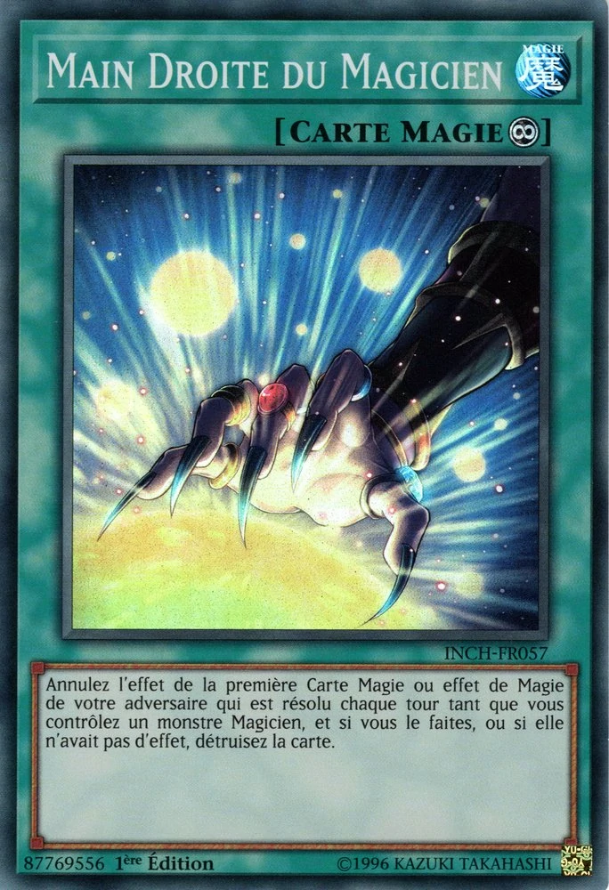 ”
!
Comme j'ai un monstre Magicien sur mon terrain, une fois par tour, je peux annuler l'activation d'une carte Magie adverse et la détruire. Comme tu peux le constater,
cette nouvelle carte a le même effet que la précédente, mais elle affecte les cartes magiques !
Donc maintenant,
“Shisha Sosei ”
est annulé et détruit ! Et comme j'ai joué une nouvelle carte Magie Continue,
“Sky Magician ”
obtient 300 points d'attaque supplémentaires !
(Entermate Sky Magician: 2800 + 300 = 3100 ATK)
Révéla Yusho, alors que la carte magie de Serena fut détruite. Cependant, cette dernière souria.
Serena: Je vous ai eu ! Yusho la regarda, l'air confus.
Yusho:Comment ça ? Demanda t-il.
Serena: Je pouvais dire au début du duel que vous seriez difficile à prévoir. Alors, je me suis demandé ce que vous feriez. Votre précédente carte de magie s'appelait
“Majutsushi no Hidarite ”
, qui pouvait annuler les pièges. J'ai eu l'intuition que vous aviez une carte
“Migite ”
qui pouvait annuler les cartes Magie et que votre Magicien était la clé pour les utiliser. Comme je le pensais,
“Sky Magician ”
vous permettait de changer de carte en fonction de la situation ! Eh bien, maintenant que les effets de
“Sky Magician ”
et de
“Majutsushi no Migite ”
ont été utilisés ce tour-ci, je peux jouer d'autres cartes magiques sans que vous ayez à changer d'autres cartes !
Disait Serena avec enthousiasme.
Yusho a été impressionné par le raisonnement de Serena et a souri en conséquence.
Yusho: Alors s'il te plaît, montre-nous à quel point tu t'amuses ! Il lui disait-il, obtenant un hochement de tête en retour.
Serena: Très bien monsieur ! Maintenant, j'active
“Gekkoga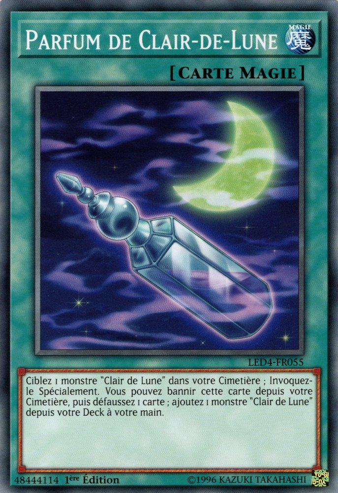 ”
depuis ma main ! Cela me permet d'invoquer spécialement un monstre Moonlight du cimetière. Reviens à mes côtés,
“Moonlight Cat Dancer ”
!
Le meilleur monstre de Serena était maintenant de retour sur le terrain.
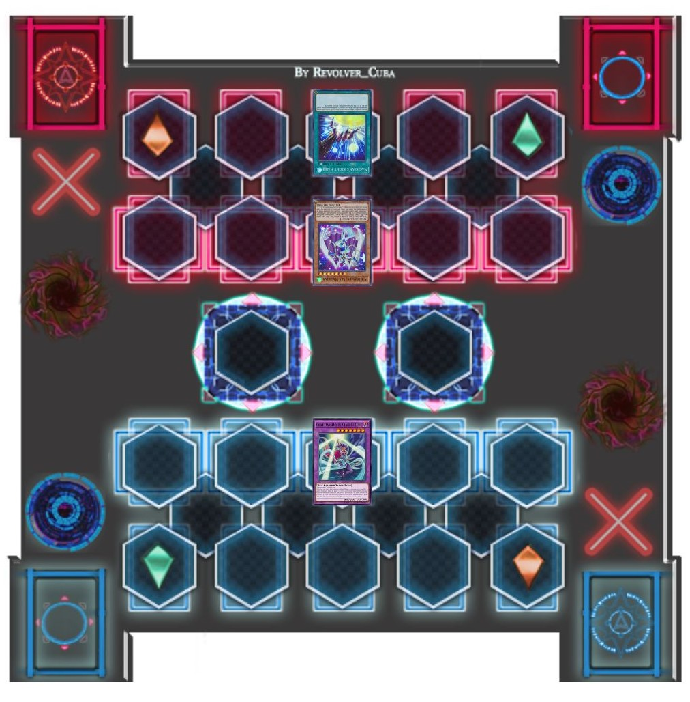
Alex: Mais la puissance d'ATK de
“Sky Magician ”
est bien plus élevée de celle de
“Cat Dancer ”
. Comment Serena va t-elle pouvoir le battre ?
Se demanda Alex.
Judai: Je pense que nous sommes sur le point de le découvrir. Répondit Judai, ce dernier souriant.
Serena: Je joue un autre exemplaire de
“Gekkoga ”
que j'utilise pour ramener un des matériels fusion de
“Cat Dancer ”
. J'invoque spécialement “Moonlight Blue Cat ”
!
Aux côtés de Cat Dancer se tenait un chat bleu et blanc de forme humaine portant un masque en demi-lune.
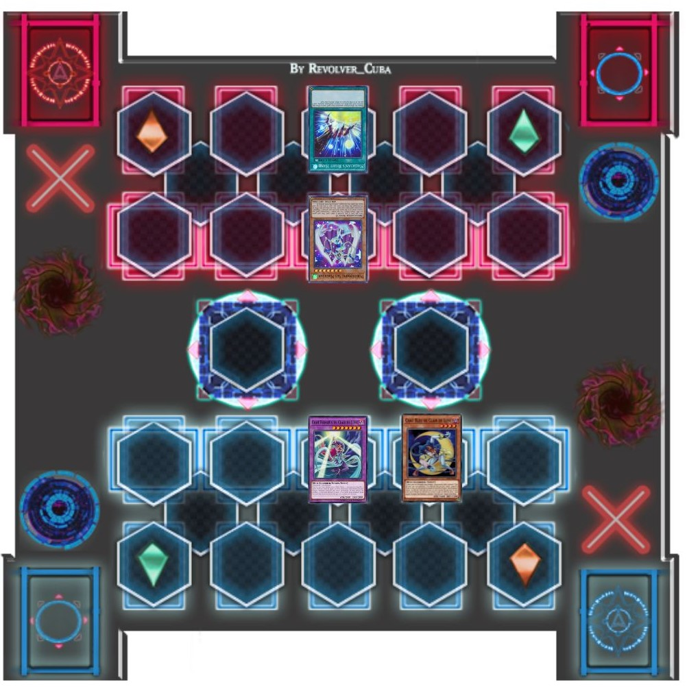
Serena: Maintenant, depuis ma main, je fais l'invocation normale de
“Moonlight Purple Butterfly ”
!
Un papillon humain violet est ensuite apparu aux côtés de ses compagnons.
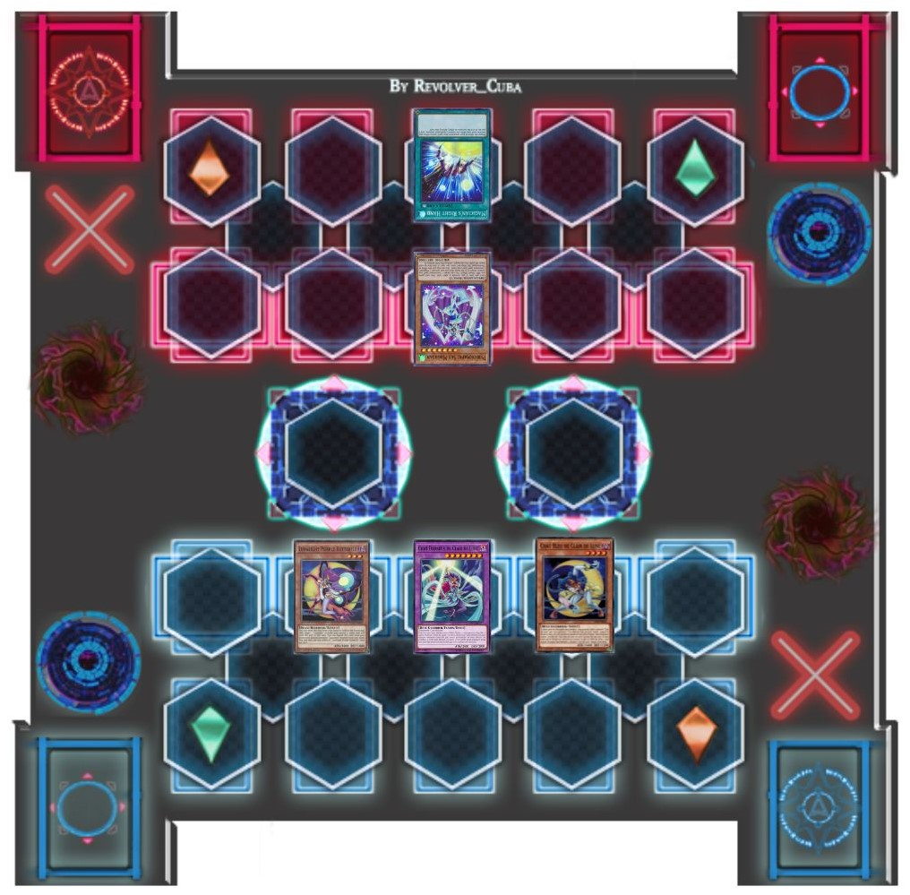
Asuka: Aucun de ces Monstres ne peut vaincre
“Sky Magician ”
. Qu'est ce qu'elle prépare ?
Serena: J'active l'effet de
“Purple Butterfly ”
. En l'envoyant au cimetière, je peux augmenter l'attaque d'un monstre fusion de 1000 points. Maintenant,
“Cat Dancer ”
devient plus forte !
(Moonlight Cat Dancer: 2400 + 1000 = 3400 ATK)
Yusho souria en la regardant.
Serena: Ensuite, j'active l'effet de
“Moonlight Blue Cat ”
. Lorsque
“Blue Cat ”
a été invoqué spécialement, je peux doubler l'Attaque d'un monstre Moonlight sur mon terrain jusqu'à la fin du tour. Je choisis
“Cat Dancer ”
!
Tout le monde regardait le monstre de fusion de Serena devenir encore plus puissant.
(Moonlight Cat Dancer: 3400 x 2 = 6800 ATK)
Alex: Sa puissance d'attaque atteint presque les 7000 ! C'est dingue ! Disait Alex complétement abasourdi.
Serena: Enfin, j'active l'effet de
“Cat Dancer ”
! En sacrifiant
“Blue Cat ”
elle peut alors attaquer deux fois chaque monstre sur le terrain adverse. Cependant, les monstres ne pourront pas être détruit durant la premières attaque.
Asuka: Maintenant, avec son monstre renforcé, ainsi que la capacité à attaquer
“Sky Magician ”
2 fois...
Asuka commença.
Judai: Ouais. Je pense exactement pareil que toi.
Se disait Judai avec un sourire. Yusho réalisa la même chose qu'eux et pensa qu'il avait bien fait son travail en aidant Serena à retrouver le moral. Il a simplement souri et a légèrement baissé la tête.
Sky Magician résista à la première attaque comme l'avait dit Serena, mais il fut facilement détruit lors du deuxième et dernier assaut.
(Yusho : 4000 LP - 3700 LP - 3700 LP = 0 LP)
Tout le monde était silencieux, abasourdi par le résultat du duel. Serena s'est alors approchée de Yusho, lui a tendu la main, et lui a souri. Pas son habituel sourire
suffisant et confiant qu'elle utilisait souvent, mais un véritable sourire chaleureux. Elle semblait vraiment heureuse.
Serena: Sakaki Yusho, je pense que je n'ai jamais eu un duel aussi agréable dans ma vie. Je vous remercie vraiment beaucoup pour cela.
Yusho a fait un sourire chaleureux en serrant la main de Serena.
Yusho: Je suis content que nous nous soyons tous les deux amusés aujourd'hui.
Tout le monde a ensuite acclamé et applaudi les deux pour ce superbe duel. Judai a même sifflé. A l'intérieur d'elle même, Serena voulait avoir plus de duels comme
celui qu'elle venait d'avoir avec Yusho. Elle pensait demander à Judai de l'emmener à l'école qu'il fréquentait lorsqu'ils ont entendu un grand bruit de fracas venant
d'en haut.
Alex: Qu'est-ce que c'était ? A demandé Alex, très nerveux sur ce coup.
Tout le monde est resté silencieux en entendant un autre fracas à l'étage. Ils ont commencé à paniquer.
Yusho: Ils nous ont trouvés. Yusho a dit doucement, faisant sursauter Serena et les autres.
Serena: Mais comment ? Comment Academia a su où nous étions ? Demanda Serena, craignant qu'elle en soit la cause.
Judai: Cela n'a pas d'importance. Nous devons tous partir maintenant.
Judai disait en sortant son Duel Disk et en appuyant sur un bouton caché sur le bord. La sphère bleue au centre s'est mise à clignoter en vert.
Asuka: Qu'est-ce que c'est ? Asuka demanda, n'ayant jamais vu un Duel Disk faire ça avant.
Judai: C'est une balise. Moi et mes autres amis en avons installé une dans nos Duel Disks pour des occasions comme celle-ci. Notre chauffeur va arriver dans quelques minutes, donc nous devons être dehors quand il se montrera.
Serena: Quel chauffeur ?
Judai: Disons juste qu'il ne vient pas de ce monde.
Alex: Y a-t-il un autre moyen de sortir ? Alex demanda, ayant toujours peur d'être attrapé et renvoyé de force à Academia. Ou pire, d'être enfermé dans une carte.
Asuka: Il y a un tunnel caché qui mène à la ville. Quel que soit le transport de Judai, c'est là que nous l'attendrons.
Asuka a répondu, se préparant à aider Yusho à mener les autres enfants dehors.
Judai: Alors vous feriez mieux d'y aller. Judai disait, en tendant son Duel Disk à Asuka.
Asuka: Qu'est-ce que tu fais ? Tu ne viens pas ? Elle a demandé, maintenant inquiète.
Serena: Je vais les ralentir, vous laissant assez de temps pour arriver au bout du tunnel. Vous devrez avoir la balise avec pour que le vaisseau puisse trouver votre position exacte. Judai a donné des instructions, choquant le groupe.
Serena: Non Judai ! Nous ne partons pas sans toi, surtout si tu n'es pas armé ! Protesta Serena.
Yusho: Il ne le sera pas. Yusho a déclaré en tendant à Judai son propre disque de duel.
Yusho: Je te fais confiance, Yuki Judai. Merci pour tout. Judai fit un signe de tête à l'artiste.
Judai: Pas de problème. Bonne chance à vous tous.
Judai le disait en se tournant vers l'étage. Serena ne voulait toujours pas le laisser derrière elle pour affronter l'ennemi seule.
Serena: Judai ! Je reste avec toi ! Judai lui rendit son regard, l'air résolu.
Judai: Pas question. Tu es celui qu'ils veulent le plus, encore plus que moi. Tu dois partir Serena ! Maintenant ! Ordonna Judai.
Serena: Mais !
Serena tenta d'argumenter davantage, mais Yusho posa une main sur son épaule et secoua la tête. Serena serra les dents, frustrée de devoir fuir sans son premier
véritable ami. Finalement, elle abandonna et accepta son choix.
Serena: Judai... s'il te plaît, ne te fais pas sceller dans une carte.
Elle lui demanda doucement. Judai sourit et leva le pouce en montant les escaliers.
Asuka: Très bien, tout le monde, suivez-nous ! Vite ! Asuka informa, alors que tous les étudiants les suivaient, elle et Yusho, dans le tunnel. Serena a hésité une seconde de plus avant de s'enfuir avec eux.
Lorsque Judai retourna dans l'église à l'étage, il vit une douzaine de membres de l'Obelisk Force l'attendre devant les portes menant à l'extérieur. Devant les soldats
se trouvait nul autre que le garçon dont Judai ne voulait surtout pas parler à Serena et Asuka.
Judai: C'est gentil d'être passer par ici, Yuri.
Judai disait en marchant calmement vers lui.
Yuri lui souria malicieusement.
Yuri: Ah, le tristement célèbre et l'infâme Yuki Judai. J'ai entendu parler de tous les problèmes que tu as causés à Académia, notamment lorsque tu as détruit le
Téléporteur Dimensionnel Primaire. Le Professeur n'était certainement pas ravi de ça.
Judai lui souria.
Judai: Vraiment ? Je pensais que perdre Serena serait la chose qui l'énerverait le plus. Yuri a alors froncé les sourcils.
Yuri: C'est le cas, en fait. Çela a surpassé tous les actes que tu as faits jusqu'à présent à Academia.. Je suis ici afin de ramener Serena, et...
Il a ensuite souri à nouveau avec un plaisir tordu en levant son propre disque de duel.
Yuri: J'ai reçu l'ordre de te sceller dans une carte. Normalement, j'aime jouer avec mes proies dans un duel avant de les sceller, mais le professeur a été
catégorique : tu est une trop grande menace pour être traitée à la légère.
Judai: Heureux d'entendre que Leo m'apprécie autant. Avant que tu ne me scelles dans quoi que ce soit, peut tu me dire comment vous avez réussi à nous retrouver jusqu'ici ?
C'est assez hors d'atteinte de la ville principale, si tu vois ce que je veux dire.
Demanda Judai en enfilant le disque de duel qu'il avait emprunté à Yusho.
Yuri: C'était simple. D'autres deserteurs ont été repérés en passant par ici par le passé. Grâce à quelques conseils des habitants, il n'a pas été difficile de
trouver votre petite cachette. A mon tour de te poser une question. Où est Serena ?
Judai: Partie depuis longtemps je l'espère. Tu ne la ramèneras jamais à Academia, et Akaba Leo n'obtiendra jamais ce qu'il veut.
Déclara audacieusement Judai en s'arrêtant à quelques mètres de lui. Yuri gloussa de nouveau.
Yuri: Ha ha ha ha ha, tu est un drôle de type. J'aurais adoré jouer avec toi. Mais hélas, ce n'est malheuresement pas prévu.
Levant son bras et se préparant à activer le dispositif de scellement, Yuri s'adressa à Judai une dernière fois.
Yuri: Allez, adieu à jamais, Yuki Ju... hein ? Yuri était sur le point d'appuyer sur le bouton de scellement, lorsque quelque chose de très inattendu s'est produit.
L'atmosphère dans la zone est soudainement devenue intense et tout le monde a ressenti un frisson intense dans le dos. Yuri et toute l'Obelisk Force ont également
commencé à ressentir une peur croissante et inquiétante. La source de ces anomalies n'était autre que Judai lui-même. À la stupéfaction de Yuri et de ses subordonnés,
les yeux de Judai passèrent du marron à une couleur dorée foncée sur son oeil droit, ainsi qu'une couleur vert sur son oeil gauche. De plus, une forte aura apparut autour de lui.
Judai: Yuri, toi ainsi que l'Obelisk Force représentez le mal absolu de cette Dimension. Les types comme vous doivent être sévèrement punis pour toutes vos actions !
Judai déclara avec force en invoquant un monstre qu'ils n'avaient jamais vu. Il s'agissait d'un démon féminin à la peau sombre et aux ailes. Elle flottait au-dessus de Judaï et regardait ses ennemis de ses yeux verts et orange. Le sourire qu'elle arborait n'était pas amical.
Membre de l'Obelisk Force: Qu...qu'est-ce que c'est que ça !?
Yubel: Dois-je leur donner une leçon, Judai ? Demanda la créature.
Judai: Assomme simplement l'Obelisk Force, Yubel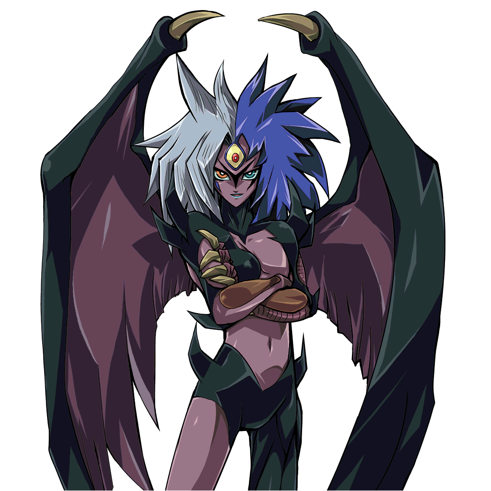. Je m'occupe personellemnt de Yuri.
Judai ordonna d'un ton froid. Avec un assaut rapide, Yubel les a tous rendus inconscients, mais sans pour autant qu'ils ne soient tous bléssés gravement.
Yuri, à ce moment-là, commença à reculer lorsque Judai s'approcha à nouveau de plus en plus face à lui.
Yuri: Qu...qu'est-ce... que... tu ? Qui est tu vraiment ? Il a demandé d'une voix tremblante. Pour la première fois de sa vie, Yuri avait peur... vraiment peur.
Judai: Cela peut sembler être un peu cliché mais dis toi que... Je suis ton pire cauchemar !
Judai cria et, avec une force invisible, il a expulsé Yuri de l'église et l'a envoyé s'écrouler dans les escaliers. Quand il s'est finalement arrêté, il était lui aussi
dans les vapes. Judai le regarda avec aversion avant qu'il ne se calme et que ses yeux ne redeviennent normaux.
Yubel: C'était amusant. Commenta Yubel.
Judai: J'avais envie de lui faire ça aussi. Ok Yubel, il est temps de nous échapper nous aussi. Judai l'en informa alors qu'il se dirigeait vers le tunnel avec Yubel qui disparaissait hors de vue.
De retour avec le groupe de Yusho, ils venaient juste de sortir du tunnel quand ils ont vu le "transport" dont Judai avait dit qu'il viendrait les chercher. La vue les
a sidérés.
Serena: Bon sang, qu'est ce que c'est que CETTE chose !? Serena s'est exclamée sous le choc.
Alex: On dirait... une sorte de vaisseau spatial ! Alex essaya de deviné.
En quelques secondes, le mystérieux vaisseau plana au-dessus du groupe et les a recouverts d'une lumière verte. Après cela, ils ont été contactés...
???: Celui ou celle qui est en possession de ce Duel Disk. Veuillez répondre. Une Asuka stupéfaite, hésitante au début, décida de répondre.
Asuka: Bon-Bonjour ?
???: Quelle est la situation ? Où est Yuki Judai ?
La nouvelle voix a demandé. C'est Serena qui a choisi de répondre, puisqu'elle était la raison pour laquelle Judai était venu ici en premier lieu.
Serena: Je m'appelle Serena. Judai n'est pas avec nous. Il essaie de retarder les forces d'Academia pour que nous puissions nous échapper.
Le ton de la nouvelle voix s'est adouci un peu.
???: Serena, je suis heureux que Judai ait réussi à te convaincre de la vérité. Mais je dois admettre que je ne m'attendais pas à un sauvetage massif.
Serena: Les choses se sont compliquées. Serena a simplement dit.
???: Laissez-moi répéter ma question précédente : Où est Yuki Judai ? Elle était sur le point de répondre quand...
Alex: Là-bas !
Alex a crié en pointant du doigt derrière le groupe. Serena, Asuka, Yusho et les autres ont vu Judai sortir en courant du tunnel. Ils étaient tous heureux de le voir revenir sain et sauf.
Serena: Il vient de revenir ! Il est avec nous maintenant ! Annonça Serena, totalement soulagée. Alors qu'ils se retrouvaient, Judai rendit à Yusho son disque de duel tandis qu'Asuka lui rendait le sien.
Judai: Merci de l'avoir garder. Disait Judai. Asuka a hoché la tête avec un sourire.
???: Judai, tu vas bien ?
Judai: Maintenant, je vais bien Astral. Allez, partons d'ici !
Astral: D'accord. En attente de vous faire entrer dans le vaisseau.
Astral a répondu alors que la lumière est devenue rouge. Alors qu'ils attendaient, Judai se tourna vers Serena, qui était contente qu'il soit revenu sain et sauf jusqu'à eux.
Serena: Heureusement que tu vas bien Judai, sinon, je serais revenue te chercher moi-même. Disait Serena d'un ton têtu, mais amical. Judai lui souria.
Judai: Pareil pour moi.
Quelques secondes plus tard, tout le monde fut transféré à bord de l'énorme vaisseau, qui s'envola et disparut dans un grand flash de lumière.
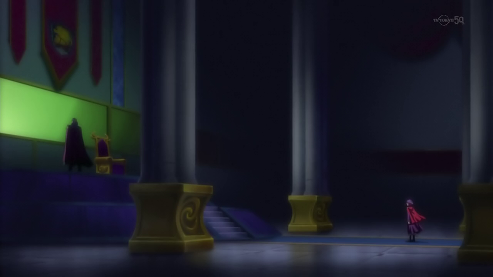
Leo: Ils se sont tous échappés !? Y compris Serena !?
Leo était hors de lui, une fureur l'envahissant dans sa salle de trône. Yuri se tenait devant lui, semblant lui-même frustré.
Yuri: Après avoir repris conscience, mes forces et moi avons fouillé tout le complexe. Il n'y avait personne. Alors que nous nous dirigions vers la sortie, j'ai vu
un énorme vaisseau s'envoler. Je l'ai reconnu. C'est le même qui a quitté la dimension Xyz si précipitamment.
Yuri lui a rapporté. Leo avait l'air de vouloir étrangler quelqu'un.
Une fois de plus, il avait perdu une pièce dont il avait besoin pour la renaissance de sa fille. Sauf que cette fois ci, la pièce était déjà en sa possession.
Serena lui avait été enlevée juste sous son nez. Après avoir entendu parler du vaisseau en fuite, il a été convaincu d'un fait indéniable : les Duellistes qui lui ont
pris les fragments de Ray, et qui les cachaient connaissaient ses plans et travaillaient ensemble pour l'arrêter. Il savait ce qu'il devait faire pour s'assurer que le
dernier fragment de Ray ne lui échappe pas.
Leo: Faites revenir Shiunin Sora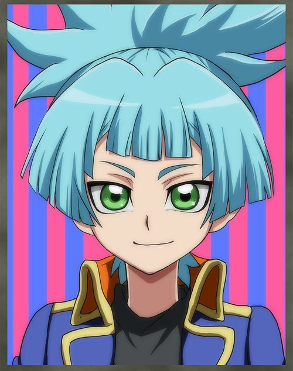 de la dimension Standard. Maintenant !
 a annoncé à
Serena
a annoncé à
Serena et aux autres élèves qu'ils étaient
arrivés à destination. Après avoir atteint les quais du continent, Judai a fait descendre son groupe du bateau et l'a suivi à travers la ville et dans la nature sauvage
juste à l'extérieur de la ville. Il les a ensuite emmenés sur un sentier les menant à une montagne avec deux grandes portes en métal devant. C'est là qu'ils venaient de
s'arrêter.
et aux autres élèves qu'ils étaient
arrivés à destination. Après avoir atteint les quais du continent, Judai a fait descendre son groupe du bateau et l'a suivi à travers la ville et dans la nature sauvage
juste à l'extérieur de la ville. Il les a ensuite emmenés sur un sentier les menant à une montagne avec deux grandes portes en métal devant. C'est là qu'ils venaient de
s'arrêter.


.png)


.png)